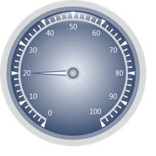
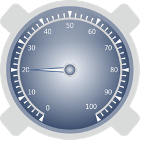
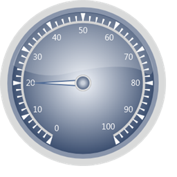
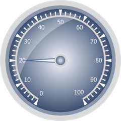
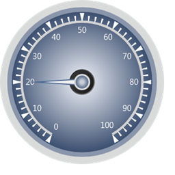

The following built-in Frame Types are available in Circular Gauge.
FullCircle:
Circular Gauge with default template will be displayed as full circle.

Figure 56: Full Circle
CircularOuterFrames:
Circular Gauge with outer frames.

Figure 57: CircularOuterFrames
CircularWithInnerTopGradient:
Circular Gauge frame with inner top gradient.

Figure 58: CircularWithInnerTopGradient
CircularWithInnerLeftGradient:
Circular Gauge frame with inner left gradient.

Figure 59: CircularWithInnerLeftGradient
CircularCenterGradient:
Circular Gauge with center gradient.

Figure 60: CircularCenterGradient